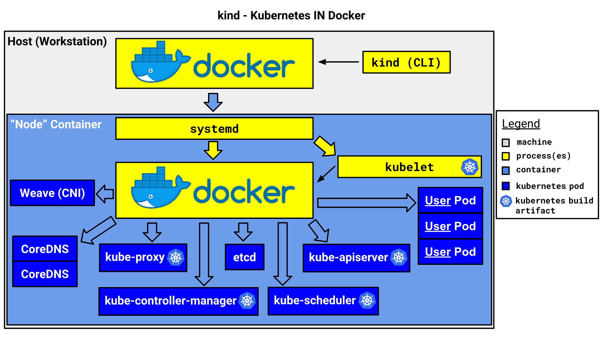

作者：gc(at)sysin.org，主页：www.sysin.org
转载请保留出处。
请访问原文链接：kind：Kubernetes in Docker，单机运行 Kubernetes 群集的最佳方案？，查看最新版。
是否没有足够的机器运行 Kubernetes 测试环境，个人电脑配置不高的话，运行多个节点的虚拟化有点力不从心，国内公有云主机一般不支持嵌套虚拟化，一套 3M+3N 的群集环境成本太高。VMware Fusion 12.0 发布，将 Kind 带入了我们的视野，这是 Google 官方的一个工具，可能是在单机运行 Kubernetes 群集的最佳方案。笔者在一台 1C 2G 的公有云虚机上运行 Kind，也不会因为计算资源有限而无法完成。
可以在阿里云、腾讯云的促销页面购买一台入门云主机就可以运行 Kubernetes 群集，还可以将应用直接发布到互联网，开发测试非常方便。
1. 简介
kind 是 Kubernetes in Docker 的简写，是一个使用 Docker 容器作为 Nodes，在本地创建和运行 Kubernetes 群集的工具。适用于在本机创建 Kubernetes 群集环境进行开发和测试。
kind 由以下组件构成:
- Go packages implementing cluster creation, image build, etc.
- A command line interface (
kind) built on these packages. - Docker image(s) written to run systemd, Kubernetes, etc.
kubetestintegration also built on these packages (WIP)
kind 使用 kubeadm 创建和启动群集节点。
2. kind 架构
kind 官方架构图如下，它将 docker 容器作为 kubernetes 的 “node”，并在该 “node” 中安装 kubernetes 组件，包括一个或者多个 Control Plane 和 一个或者多个 Work nodes。这就解决了在本机运行多个 node 的问题，而不需要虚拟化。

3. 安装 Kind
(1)、安装 Docker，这是前提条件。
(2)、安装 kubectl：Kind 本身不需要 kubectl，安装 kubectl 可以在本机直接管理 Kubernetes 群集。
(3)、安装 kind：
查看版本：Github releases page
Linux：
1
2
3curl -Lo ./kind https://kind.sigs.k8s.io/dl/v0.9.0/kind-linux-amd64
chmod +x ./kind
mv ./kind /usr/local/bin/kindmacOS (homebrew):
1
brew install kind
或者
1
2
3curl -Lo ./kind https://kind.sigs.k8s.io/dl/v0.9.0/kind-darwin-amd64
chmod +x ./kind
mv ./kind /usr/local/bin/kind
如果安装了 VMware Fusion 12.0，在启动 vctl（vctl system start）之后，直接运行 vctl kind。
- Windows：可以支持，不推荐。
4. 操作入门
创建群集
1 | kind create cluster |
默认的群集名称为kind，可以使用参数--name指定创建的群集的名称，可以创建多个群集：
1 | kind create cluster --name kind-2 |
指定 node 镜像版本创建群集
1 | default |
多群集切换
获取群集名称，可以看到下面有两个群集
1 | kind get clusters |
切换群集
1 | 切换到群集`kind` |
可以通过 Kubernetes kubeconfig 配置文件来配置默认群集.
查看节点（默认只有一个 control-plane）
1 | kubectl get nodes |
删除群集
删除群集kind-2
1 | kind delete cluster --name kind-2 |
将镜像加载到 kind 群集中
Kind 群集中的 Docker 镜像可以从互联网直接拉取，如果需要将本机镜像加载到 Kind 群集中，使用如下命令
kind load docker-image my-custom-image
kind load docker-image my-custom-image --name kind-2 (指定群集名称)
kind load image-archive /my-image-archive.tar （加载导出的镜像压缩包）
5. 配置 kind 群集
可以查看示例配置文件 kind-example-config，创建群集时使用 --config 参数:
1 | kind create cluster --config kind-example-config.yaml |
示例配置文件如下：
1 | # this config file contains all config fields with comments |
Multi-node clusters
示例如下：
1 | # three node (two workers) cluster config |
Control-plane HA
示例如下：
1 | # a cluster with 3 control-plane nodes and 3 workers |
将 node 的端口映射到主机
可以通过extraPortMappings将 node 的端口映射到主机
1 | kind: Cluster |
指定 Kubernetes 的版本
可以通过设置 node 的容器镜像版本运行指定版本的 kubernetes 群集。可以在官方 release 页面中中查找需要镜像 tag，带上 sha256 shasum，例如：
1 | kind: Cluster |
IPv6 clusters
kind目前支持 IPv6 单栈群集，前提是运行 Docker 的主机支持 IPv6，双栈支持即将到来, 大多数操作系统/发行版支持 IPv6，Linux 上通过以下命令查看：
1 | sudo sysctl net.ipv6.conf.all.disable_ipv6 |
显示如下，表明主机启用了 IPv6：
1 | net.ipv6.conf.all.disable_ipv6 = 0 |
如果 Docker 运行在 Windows 或者 Mac 上，IPv6 端口转发不起作用，需要指定 API Server 使用 IPv4 端口转发：
1 | # an ipv6 cluster |
在 Linux 上只需要这样:
1 | # an ipv6 cluster |
导出 Cluster 日志
从默认 cluster (名称为 kind)导出日志：
1 | kind export logs |
切换群集加上 --name 参数。
默认日志导出到 /tmp 目录下，可以指定导出的目录，例如：
1 | kind export logs ./somedir |
日志文件结构如下：
1 | . |
6. 配置概述
6.1 入门
在创建 Kind 群集时，需要通过一个 YAML 配置文件来自定义群集配置。
一个最小化的配置如下:
1 | kind: Cluster |
将配置文件保存为 config.yaml，通过运行命令 kind create cluster --config=config.yaml 来创建群集。
6.2 Cluster-Wide 选项
以下全局选项可用，并非所有的选项列入文档，可以关注官网文档的更新。
Networking
关于网络的配置选项。
IP Family
IPv6 (and soon dual-stack!) clusters：
1 | kind: Cluster |
上节 “IPv6 Clusters” 中有更详细的描述。
API Server
自定义 API Server 侦听地址和端口：
1 | kind: Cluster |
Pod Subnet
自定义 pod IP 地址范围：
1 | kind: Cluster |
Service Subnet
自定义 service IP 地址范围：
1 | kind: Cluster |
禁用默认 CNI
KIND 附带了一个简单的网络实现（“kindnetd”），它基于标准 CNI 插件（ptp，host local，…）和简单的 netlink 路由。
这个 CNI 也处理 IP 伪装。
您可以禁用默认值以安装其他 CNI。这是一个高级用户功能，支持有限，但已知许多常见的 CNI 清单可以工作，例如 Calico。
1 | kind: Cluster |
kube-proxy mode
kube-proxy mode 可选 iptables 和 ipvs，默认使用的 iptables。
1 | kind: Cluster |
Nodes
kind: Cluster 的 nodes 字段如果不设置，默认时这样的（即仅有一个 control plane）:
1 | nodes: |
多节点群集示例如下：
1 | kind: Cluster |
可以通过设置 node 的容器镜像版本运行指定版本的 kubernetes 群集。可以在官方 release 页面中中查找需要镜像 tag，带上 sha256 shasum，例如：
1 | kind: Cluster |
6.3 Per-Node 选项
以下选项适用于 nodes，并非所有的选项列入文档，可以关注官网文档的更新。
Extra Mounts
附加挂载可以用来将主机上的存储挂载到 Node 上，用于持久保存数据。
1 | kind: Cluster |
Extra Port Mappings
附加端口映射可以将端口转发到 Kind 节点。这是一个跨平台的选项，可以将流量引入 Kind 群集。
使用 Linux 上的 docker，您可以简单地将流量从主机发送到节点 IP，但要在 macOS 和 Windows，您需要使用这些设置才能实现。
另外也可以使用 ingress 转发流量。
1 | kind: Cluster |
Kubeadm Config Patches
KIND 使用 kubeadm 配置群集节点。
KIND 在第一个控制平面节点上运行“kubeadm init”，该节点可以使用 kubeadm InitConfiguration (spec) 进行自定义配置。
1 | kind: Cluster |
在 KIND 群集其他节点配置中，包括 worker 或者 control-plane (in HA mode), KIND 运行 kubeadm join 命令参数，可以通过 JoinConfiguration (spec) 进行自定义配置。
1 | kind: Cluster |
7. 部署 Dashboard
直接部署 Dashboard，运行命令:
1 | $ kubectl apply -f https://raw.githubusercontent.com/kubernetes/dashboard/v2.0.0/aio/deploy/recommended.yaml |
验证：
1 | $ kubectl get po,svc -n kubernetes-dashboard |
创建 ClusterRoleBinding 获得群集 admin 访问权限：
1 | $ kubectl create clusterrolebinding default-admin --clusterrole cluster-admin --serviceaccount=default:default |
创建登录 Dashboard 的 token：
1 | $ token=$(kubectl get secrets -o jsonpath="{.items[?(@.metadata.annotations['kubernetes\.io/service-account\.name']=='default')].data.token}"|base64 --decode) |
使用 echo 显示 token：
1 | echo $token |
记得保存一下 token
1 | echo $token > dashboard-token.txt |
使用 kubectl 命令访问 Dashboard，命令如下:
1 | $ kubectl proxy |
点击 Kubernetes Dashboard 使用上述 token 登录 Dashboard
也可以通过 ingress 来访问 Dashboard。
8. 部署 ingress
在创建群集时，需要使用 KIND 的 extraPortMapping 配置选项将端口从主机转发到运行在节点上的入口控制器。
然后部署一个 Ingress controller，已知以下几个 ingress controllers 可以支持 kind：
这里以 ingress-nginx 为例：
创建群集
使用 extraPortMappings 和 node-labels 配置选项创建一个群集。
- extraPortMappings 允许本地主机转发请求到 Ingress controller 的 80/443 端口
- node-labels 允许 ingress controller 运行在指定的 node 上
1 | cat <<EOF | kind create cluster --config=- |
Ingress NGINX
1 | wget -O kind-ingress-nginx.yaml https://raw.githubusercontent.com/kubernetes/ingress-nginx/master/deploy/static/provider/kind/deploy.yaml |
注意：image 来自 k8s.gcr.io，需要文明访问。
1 | #image: k8s.gcr.io/ingress-nginx/controller:v0.35.0@sha256:fc4979d8b8443a831c9789b5155cded454cb7de737a8b727bc2ba0106d2eae8b |
执行如下命令等待部署完成：
1 | kubectl wait --namespace ingress-nginx \ |
或者执行命令验证部署：
1 | $ kubectl po,svc -n ingress-nginx |
测试 Ingress
使用官方提供的 http-echo 应用来测试，内容如下：
1 | kind: Pod |
直接应用：
1 | kubectl apply -f https://kind.sigs.k8s.io/examples/ingress/usage.yaml |
测试效果如下：
1 | should output "foo" |
ingress dashboard
本例使用受信任的 SSL 证书，通过 ingress 以 https 发布 Dashboard。
部署受信任的 SSL 证书
1 | 创建 secret，在 ingress 不能直接使用证书需要转换为 secret 才能使用 |
配置 ingress 转发文件
1 | # vi dashboard-ingress.yaml |
host: 对应的域名
path: url上下文
backend: 后向转发到对应的 serviceName: 和 servicePort:
注意，dashboard 默认使用 https 提供服务，ingress 默认 backend-protocol 使用 http，这里发布成功的关键是要添加 annotations 参数：
1 | annotations: |
部署：
1 | kubectl apply -f dashboard-ingress.yaml |
部署成功后可以通过域名访问：https://k8s.sysin.cn
9. Istio
Istio 官方支持部署在 Kind 上，以下为简单示例。
下载当前版本：
1 | $ curl -L https://istio.io/downloadIstio | sh - |
下载指定版本：
1 | $ curl -L https://istio.io/downloadIstio | ISTIO_VERSION=1.7.0 TARGET_ARCH=x86_64 sh - |
切换到 istio 目录:
1 | $ cd istio-1.7.0 |
添加 istioctl 到环境变量 (Linux or macOS):
1 | $ export PATH=$PWD/bin:$PATH |
安装：
例如使用 demo configuration profile 安装
1 | $ istioctl install --set profile=demo |
限于篇幅，参看其他文档。
10. 限制
kind 部署 kubernetes 群集相当方便，可以快速部署多个群集。但在群集的配置和更新上有明显弊端，只能通过重新创建群集来配置和更新群集。所以在初始化群集的时候需要考虑好配置选项。
11. 云主机推荐
使用体验：
- 在 CPU、内存和磁盘性能上两家并无明显体验差别。
- 在带宽上，最低都是1Mbps，根据官方说明不足10Mbps的带宽，入站带宽都是10Mbps，出站带宽是实际购买带宽（个人使用一台腾讯云，下载带宽可大100Mbps）。
两家有什么区别？
阿里云详细规则页面有提示不支持退订，但可以特殊申请退订。腾讯云上述产品不满意可以直接退款。
阿里云基于个人身份识别（比如身份证），一个身份限购一台，新注册账号无效，腾讯云基于账号识别，一个身份可以新注册账号另外在购买一台。
促销信息：
>>全球网盘极速中转，1G流量不到1元，支持 Rapidgator、Rg.to、Uploaded...
>>阿里云：新用户2核2g仅需86元/年，2核4g企业仅需469.39元/年
>>腾讯云：云产品限时秒杀，爆款1核2G云服务器，首年99元
>>华为云：精选云产品2折起，注册立领8800元上云礼包
如果文章中使用的内容或图片侵犯了您的版权，请联系作者删除。如果您喜欢这篇文章或者觉得它对您有所帮助，欢迎您发表评论，也欢迎您分享这个网站，或者赞赏一下作者，谢谢！
 支付宝打赏
支付宝打赏
 微信打赏
微信打赏
赞赏一下